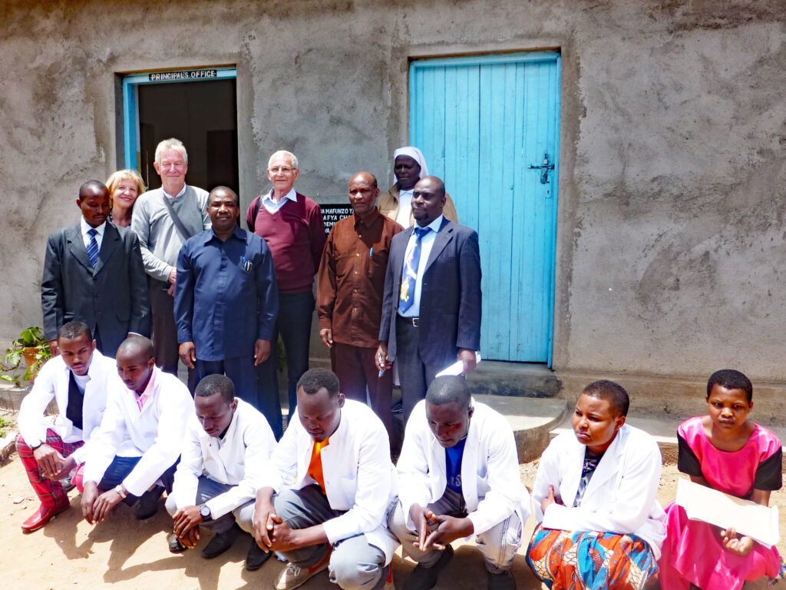
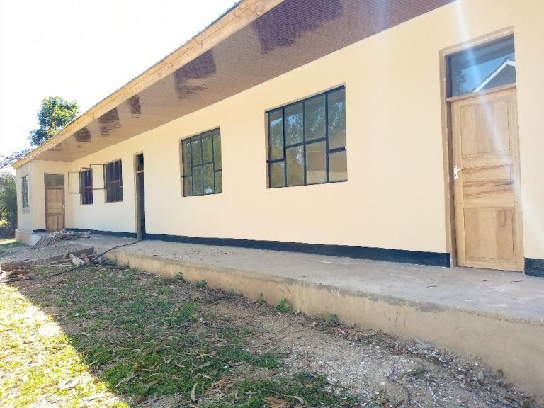
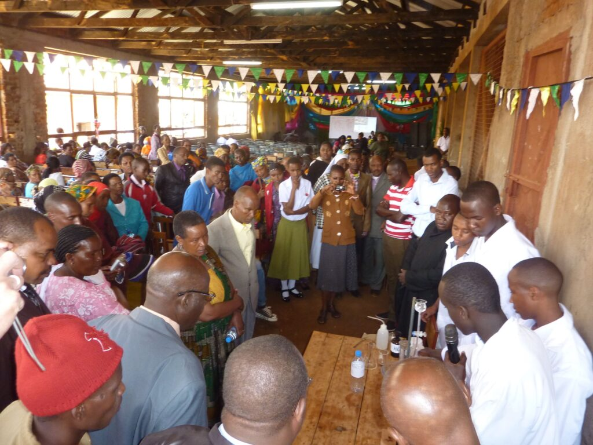
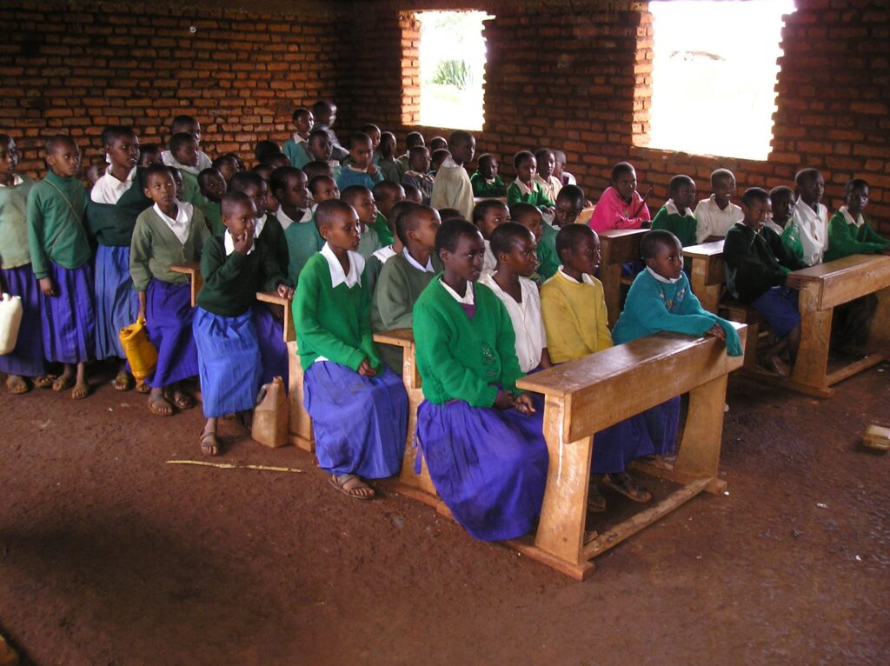

Projekte – konkret, vor Ort, dokumentiert.
Drei Bereiche, eine gemeinsame Idee: Hilfe zur Selbsthilfe. Unsere Partnerin ist die Diözese Mbulu, in der Region Manyara im Norden Tansanias.
Gesundheitsbereich
Seit mehreren Jahren konzentrieren wir uns im Gesundheitsbereich auf die Förderung des Laboranten-Kollegs in Bashanet. Daneben unterstützen wir auch die Krankenhäuser in Dareda und Bashanet sowie einzelne Krankenstationen der Diözese.
Schulbereich
Im Schulbereich unterstützen wir mit jeweils jährlich abgeschlossenen Projekten die Madunga Girls Secondary School und die Sanu Technical School in Mbulu.
Die Madunga Girls School ist eine Boarding School – die Schülerinnen wohnen in der Schule. Sie wird von indischen Schulschwestern geleitet, belegt seit Jahren im Ranking der Region Manyara den ersten Platz und im Landesvergleich vordere Plätze.
Die Sanu Technical Secondary School bietet neben der Sekundarausbildung bis Form IV (vergleichbar mit mittlerer Reife) eine Ausbildung in einem Beruf – Maurer, Tischler, Automechaniker. Sie ist aus einem Vocational Training Center (VTC) hervorgegangen. Der Staat fordert auch für Handwerksberufe eine Sekundarschulausbildung. Auch diese Schule ist eine Boarding School.
Alle Einrichtungen werden von der Diözese Mbulu betrieben. In Tansania – wie in den meisten Entwicklungsländern – werden Bildung und Krankenversorgung traditionell von den Kirchen geleistet. Erst in den letzten 10 bis 20 Jahren engagiert sich der Staat zunehmend in diesen Bereichen.
Schülerförderung
Wir unterstützen bedürftige und fähige junge Menschen mit einem Zuschuss zum Schulgeld – von der Sekundarausbildung bis zum Ende der Berufsausbildung. Die Diözese Mbulu wählt in Zusammenarbeit mit den Kommunen und den Schulen die zu unterstützenden Schülerinnen und Schüler nach Bedürftigkeit und Fähigkeit aus.
Was wir derzeit fördern.

Laboranten-Kolleg in Bashanet
Bishop Nicodemus Hhando College of Health Science – Laboranten und Clinical Officers für den ländlichen Raum.
Projekt ansehen
Klassenräume für Clinical Medicine
Erweiterung des Kollegs um einen zweiten Studiengang – finanziert aus den Erlösen der Kunstauktion 2022.
Projekt ansehen
Sanu Tec Sekundarschule
Vom Dach über Fenster und Estrich bis zur Möblierung – ein Speise- und Mehrzwecksaal über mehrere Jahre fertiggestellt.
Projekt ansehen
Madunga Girls Secondary School
Eine massive Einfriedung schützt die Mädchen-Schlafräume einer der besten Schulen Tansanias.
Projekt ansehen
Student Support Program
Schulgeld für bedürftige, fähige Schülerinnen, Schüler und Studierende – ein Programm, das es länger gibt als den Verein selbst.
Projekt ansehenWelches Projekt liegt Ihnen am Herzen?
Sie können Ihre Spende auch einem bestimmten Vorhaben zuweisen – wir sorgen dafür, dass sie genau dort ankommt.